从lua到cpp简易教程¶
--- by TanYuHong 22.12.17
--- 希望这个教程能够让你快速入门
2. 预备知识¶
2.1. 工厂模式¶
-
隐藏了对象的创建过程，同时让对象调用和编写更加系统化。
-
这代码里面有一个factory.cpp，可以理解为它是一个工厂，实例化的对象(skill)都是产品，可以认为他是个造skill实例的factory，所有skill的实例化都封装在了factory里面。
2.2. 单例模式¶
- 单例对象的类只能允许一个实例存在。
- 在内存中只有一个对象，节省内存空间
- 下面是SRC的单例模式的实现，SingletonClass模板，如果这个类被实例化了，我们就直接返回实例，否则就对该对象实例化。
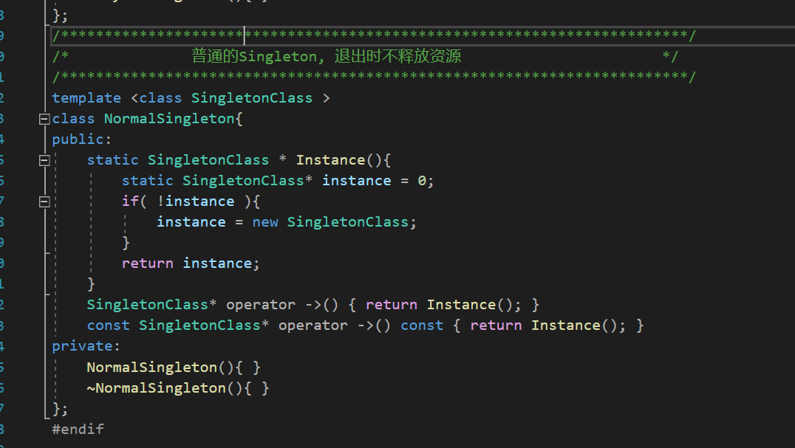
- 比如说下面这张图，现在需要一个GoCmuRush的任务，我们需要实例化一个叫做SmartGotoPosition的类，但是实际上这个类仅被实例化一次之后就可以满足要求了
- 如果从函数的角度理解可能更加准确，可以简单的认为SmartGotoPosition的功能就相当于一个函数，那么这个函数只需要一个就可以了。
- 试想这个GetNumberArgument实例化，我们只需要一个实例即可，其他的实现都可以通过改变他的内部参数实现，所以不需要反复实例化他，此时单例模式就发挥了作用。
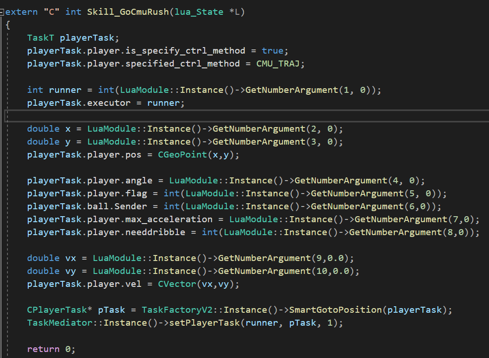
3. 从实例化的角度理解框架¶
- 我们整个代码的运行就是不断的在实例化一些任务。
- 在实例化的过程中execute
- 比如我现在有个player要踢球，那我就实例化一个task，里面有人的状态，有球的状态，当这个task实例化完了之后这个动作也就做完了。
- 整个代码都是指针在传递。
- 类能分为skill、command、para等
- 其中封装了很多namespace
3.1. LuaModule¶
- LuaModule是整个lua和c++的接口

-
这里定义了luaDef这样一个struct
-
里面有一个name，一个函数指针
- 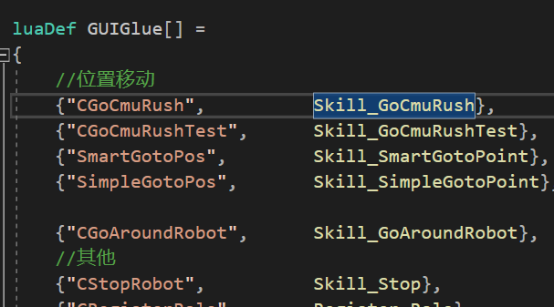
-
然后每次lua调用函数的时候，给定的是前面这个字符串，相当于查询这个GUIGLue这个数组，然后我们给的接口是后面这个函数指针
-
下面以GoCmuRush为例
- 开头的写法是固定的
- 如果想进一步了解任务架构 TaksT，他的定义在 **misc_types.h**里面
- 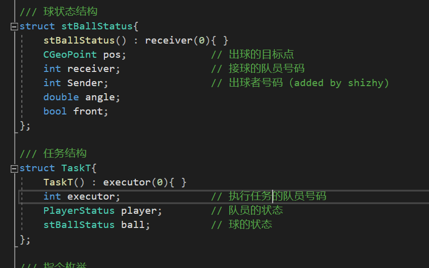
- 我个人倾向于把他理解为 任务参数，上图中的struct就规定了对于一个skill我们到底需要哪些参数。
- **PlayerStatus**和 **stBallStatus**很重要，他告诉了我们如果要完成一个任务我们需要给定什么参数，建议转到定义去再理解。
- instance：单例模式。
- GetNumberArgument：
-
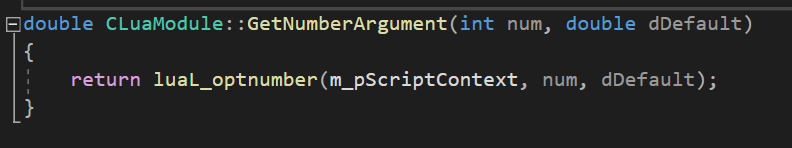
- 相当于是从lua中按照顺序一一调取参数。
-
下面开始初始化这个playerTask实例。调用TaskFactoryV2工厂去生产一个叫做zSmartGotoPosition的产品。
- 最后的TaskMediator就是处理优先级的问题：
- 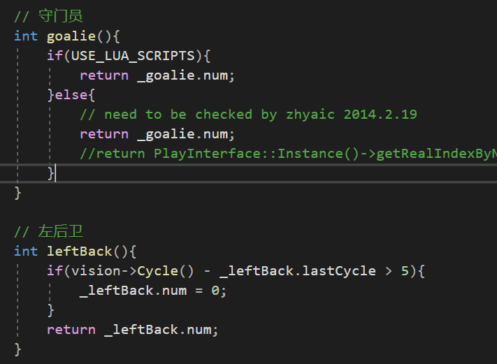
- 但实际上我们现在不再使用TaskMediator了。
3.2. factory¶
3.2.1. 直接调用skill¶
-
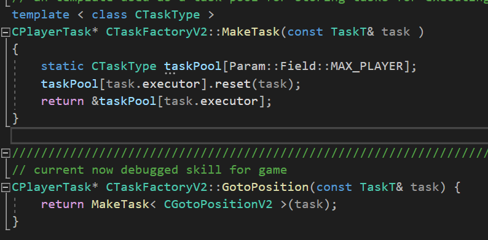
-
首先类模板CTaskType，然后下面就实例化具体是哪一个
-
调用顺序：例如GotoPosition，首先传进来一个task，然后调用MakeTask，指明这个是CGotoPositionV2类型，然后task传到上面这个maketask里面去。
- param是个namespace，里面有一些参数，Field也是namespace，Param::Field::MAX_PLAYER=16。这些namespace封装了许多常数。
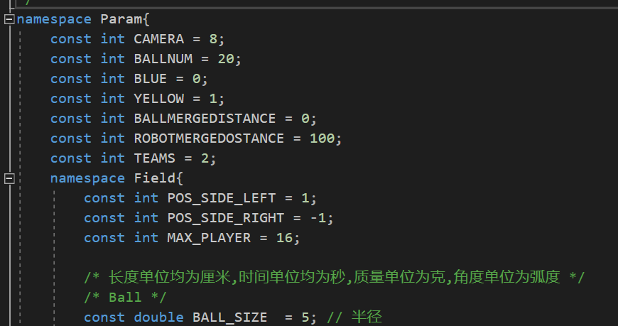
- executor是执行者的编号
template < class CTaskType >
CPlayerTask* CTaskFactoryV2::MakeTask(const TaskT& task )
{
static CTaskType taskPool[Param::Field::MAX_PLAYER];
// 申请了一个长度为maxplayer的taskpool
// 相当于每个人的task弄成了一个数组
taskPool[task.executor].reset(task);
//对于当下task的指定人，他的task需要更新
return &taskPool[task.executor];
//更新完后返回当下task
}
- 类型是static
- 这个数组只有在这个类型的skill第一次被调用的时候会被生成，后面就不会再做这一步了，那么taskpool就会一直存在在这里
- 只有task指定的executor才会发生变化
- reset：用task初始化taskpool
-
随后返回taskpool的地址**（取地址符）**
-
随后进入CGotoPositionV2类里面去
-
接下来的关键是这个taskpool的实例化过程。
3.2.2. playrole打包调用skill¶
-
咱们点开这个工厂的.h文件，存在namespace叫做PlayerRole
-
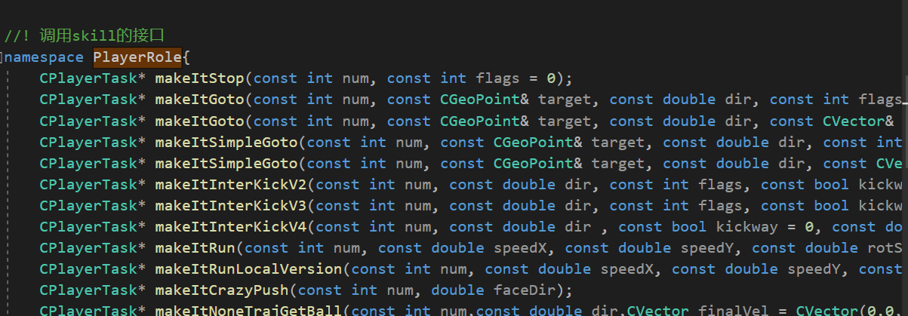
- 相当于实现了一些skill的复用，处理更加精细。
- 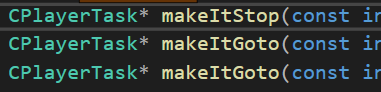
- 这里两个makeItGoto，但是在具体实现的时候：
- 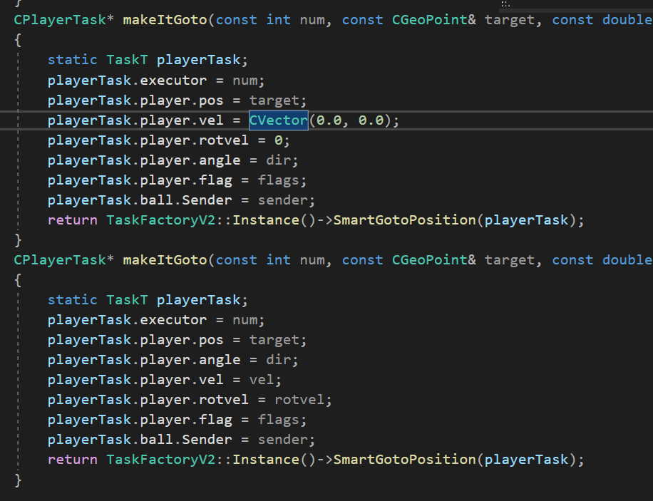
- 其实是有区别的，最后调用的同样都是SmartGotoPosition这个skill，但是参数不一样
- 相当于原来的开发流程又加了一层。
- 1、lua直接连到skill
- 2、lua连到playrole再连到skill
3.2.3. factory小结¶
- 语法上来说这个 makeit系列是返回值为CPlayerTask指针的函数，而不是类，因此 他们不属于工厂里面的东西
- 即函数的调用，而并非类的实例化，区分函数调用和类的实例化是读懂这些代码的关键
- 工厂是只生产skill，namespace把skill再复用。
-
因此我们在顶层设计skill的时候有两种方法：第一种是直接造skill，第二种是playrole，然后skill复用去做。
-
目前来说就是 直接的接口写在了luamodule里面，然后playerrole的实现和factory的生产写在了factory里面。
- luamodule有些接口是直接接在了skil.cpp，有些是接在了playerrole里面，然后再接到skill.cpp里面去
3.3. PlayerTask.h¶
- 所有skill都是他的派生类，定义task必要参数
- Cskill是CStatedTask的派生，CStatedTask是CPlayerTask的派生
- Cskill同样也可以通过CPlayerTask派生得到（不常用）
- 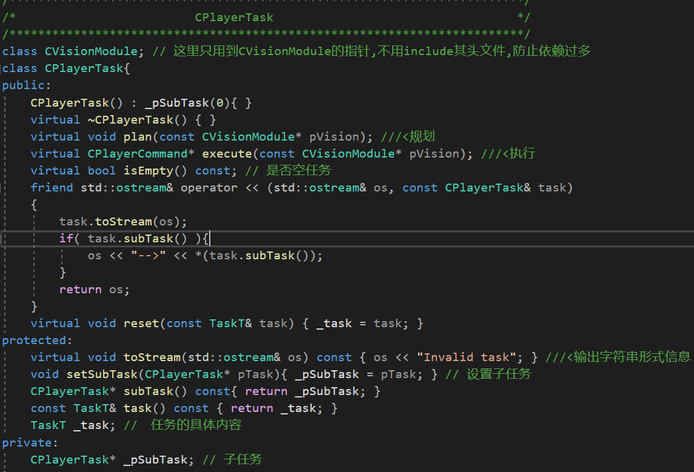
- 首先默认构造子任务为空，虚构空
- 函数：
- plan：规划
- execute：执行，注意返回为 **CPlayerCommand**的指针，方便ActionMudule调用。
- isempty：是否为空任务
- 标准化输出调试
- reset重置任务，和上面factory用的reset相同。
- setsubtask、subtask、task函数都是辅助函数
- 变量：
- task：当下执行的任务
- subtask：具体执行的任务
- 如果不写会默认缺省实现
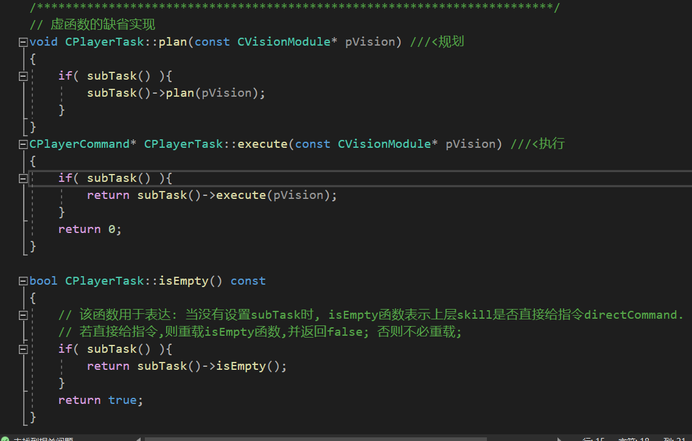
3.4. skill¶
- 以CStopRobotV2为例
- 以TouchKick为例
3.4.1. .h¶
- 以CStopRobotV2为例
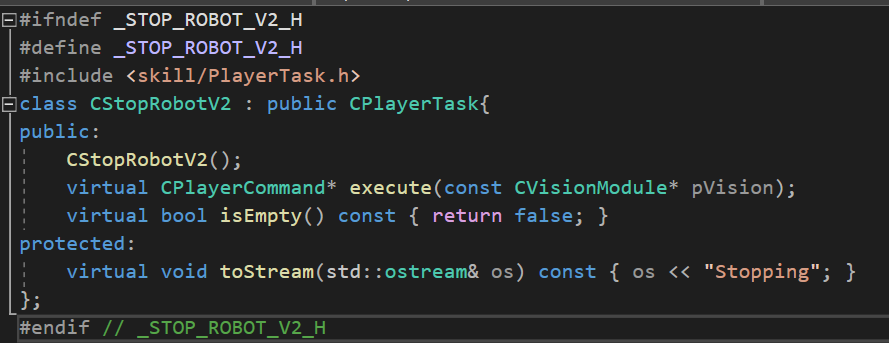
- 所有的skill都是CPlayerTask的派生**（都是以类为基准展开，不是函数）**
- 注意因为Stop动作很简单，因此无需状态机设计，只用CPlayerTask派生即可，但是复杂的skill一般都需要CStatedTask进行派生。
- 可以只有构造函数、execute、empty，其他的都是缺省。
3.4.2. .cpp¶
第一种写法 只有execute没有plan¶
- 针对非常底层的skill，已经不需要子任务了
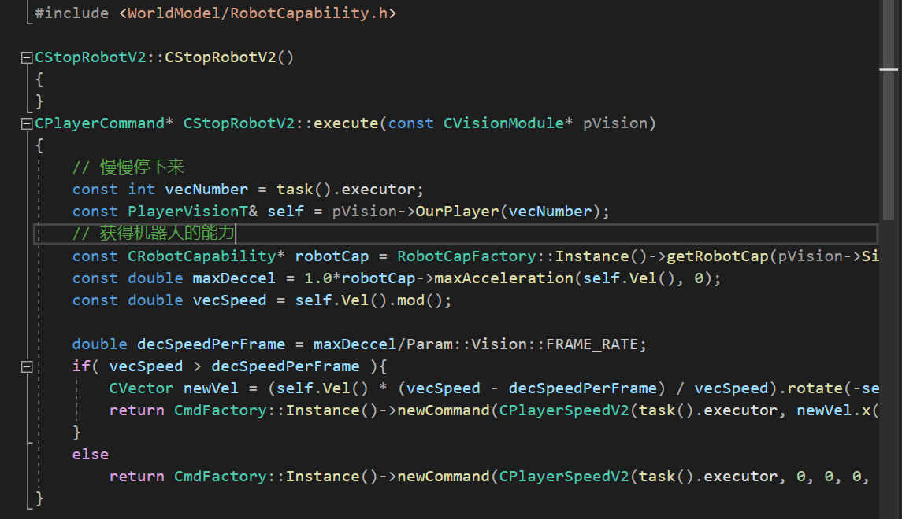
- 构造函数是空的
- 最后直接返回command发送指令
第二种写法 只有plan没有execute¶
- 顶层skill开发都用这种写法。
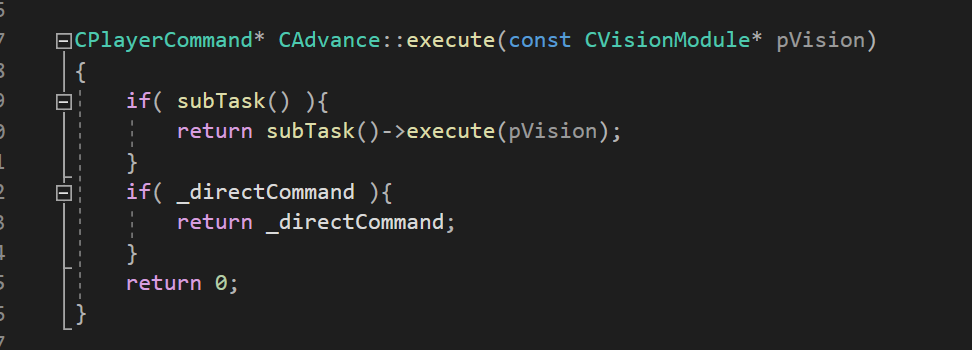
- 这里execute，如果有子任务就布置下去，然后返回NULL
- 随后plan进行计算，调用更加底层的skill（getball or shootball or smartgotopositon）
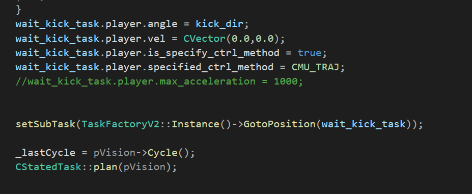
- 如上图，他最后仅仅只是算wait_kick_task点
- 然后布置子任务，GotoPosition
- plan相当于布置子任务，然后execute执行子任务：
- 即：布置任务 → 布置子任务 → 执行子任务 → 执行任务
5. 开发skill流程：以Gofour为例¶
- 就是上次hxy布置的那个作业，看球的位置跑四个点。
5.1. lua层 想法：从下往上写¶
- 首先我们要有个lua的Gofour.lua
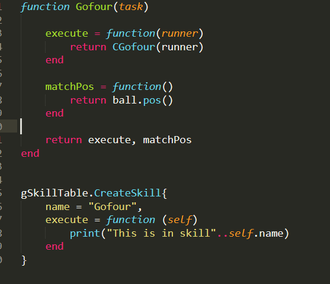
- 其中CGofour就是给定c++的那个字符串，runner传进去runner信息。
- 注意下面的name也要改，写在skill里面
- 然后在task.lua里面声明
- 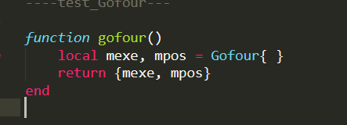
- 在config.lua里面注册
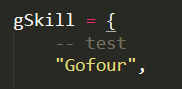
- 然后在最顶层用gofour的时候就可以直接用
- 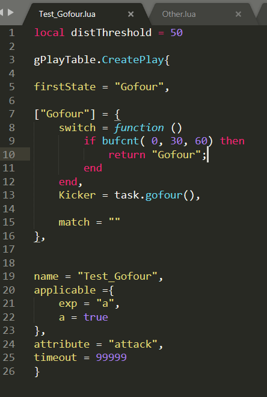
- 最顶层的记得注册（具体到战术的状态机就注册在前面）
- 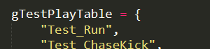
5.2. c++层 想法：从上往下写¶
- 首先在luamodule把接口写好
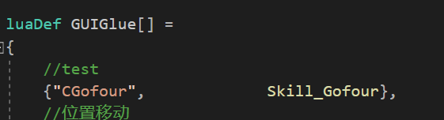
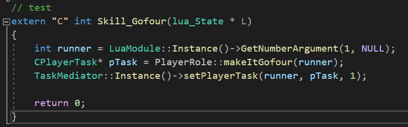
- 转到playerrole层
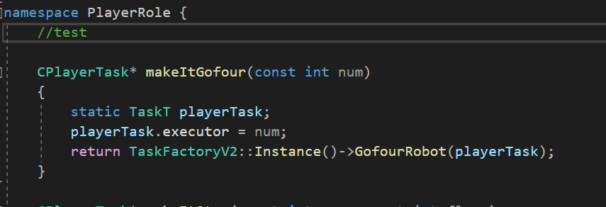
-
在factory.cpp，在namespace里面定义，一定要注意在factory.h里面声明！
-
这里转到GofourRobot这个具体的skill，接口如下
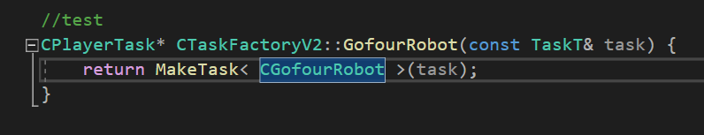
- 接下来写一个GofourRobot.h
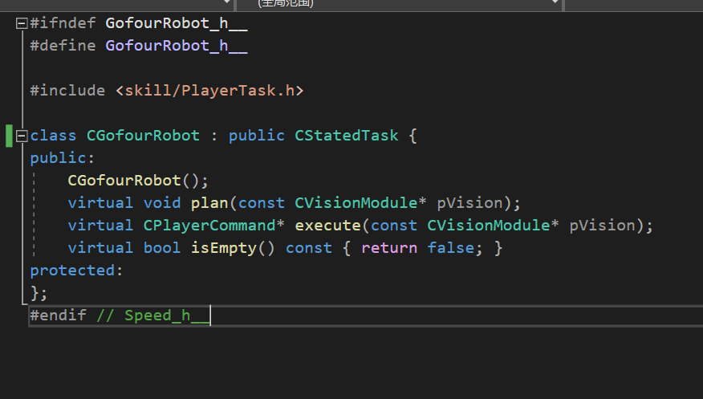
-
没写的函数都是缺省
-
然后GofourRobot.cpp
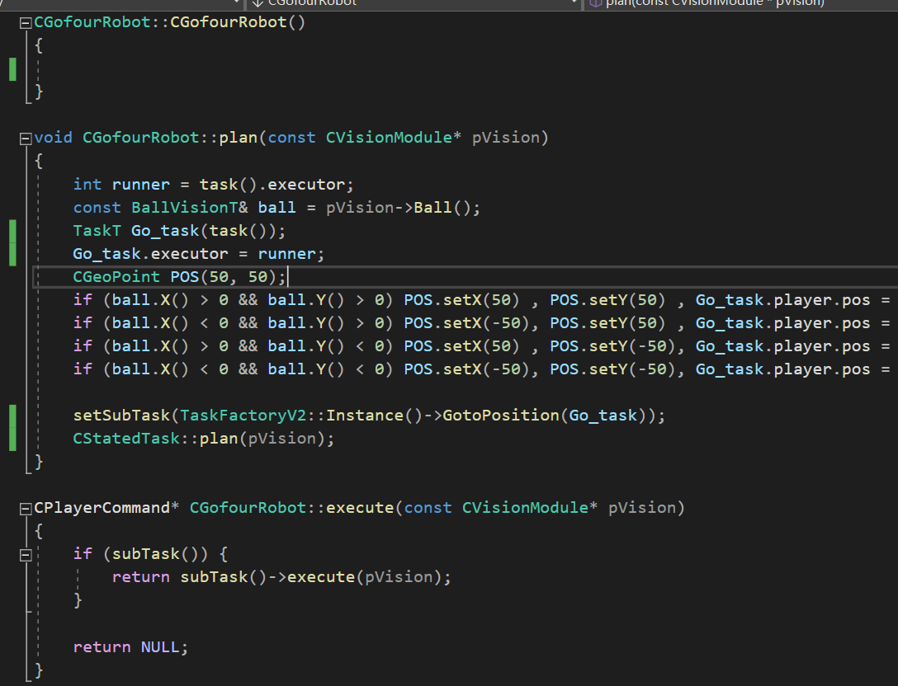
- 这里用的方法是plan分配子任务，然后状态机布置子任务，execute执行子任务。（注意子任务也是先布置后执行）
- 然后把没引的库引一下，特别引一下GofourRobot.h
5.3. 可能会遇到的bug与修改方法¶
5.3.1.¶
1、不能直接new，这样路径会变成
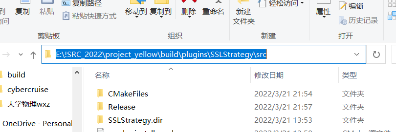
- 但是我们期望的skill路径是skill文件夹。
- 我的处理方法：直接在原文件夹上新建东西，然后添加已有项。
2、
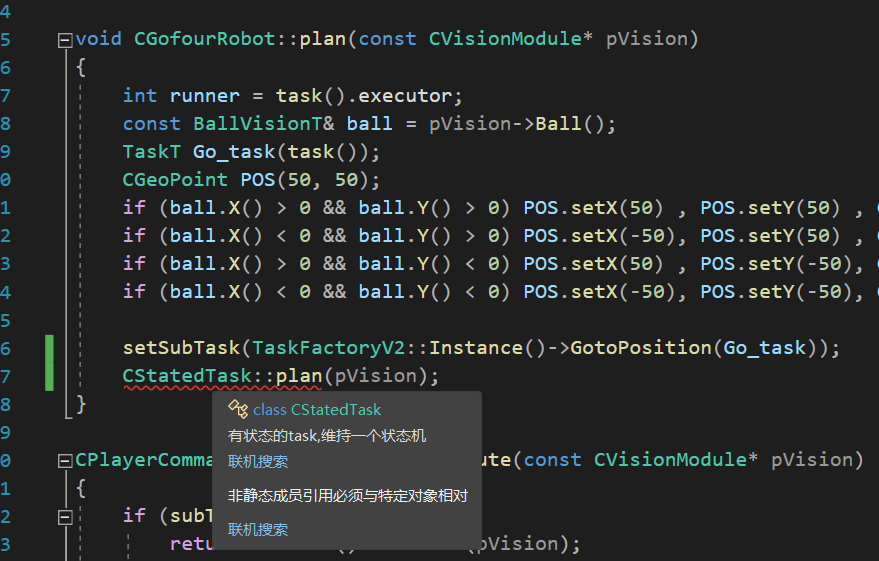
- 这是因为我们.h中
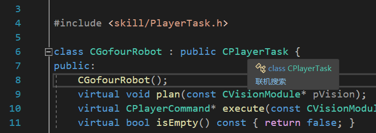
- 如果用状态机应该
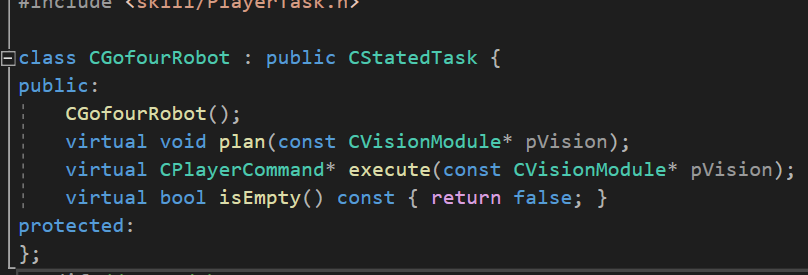
- Cskill是CStatedTask的派生，CStatedTask是CPlayerTask的派生
- Cskill同样也可以通过CPlayerTask派生得到
6. 参考资料¶
- 工厂模式教程 https://www.cnblogs.com/xiaolincoding/p/11524376.html
- 单例模式教程 https://www.cnblogs.com/xuwendong/p/9633985.html
- Lua调用C函数简单教程 https://blog.csdn.net/doitsjz/article/details/50918056?locationNum=2&fps=1
7. 未尽事宜¶
Command
ActionModule
lua_zeus
KickDireciton等工具cpp